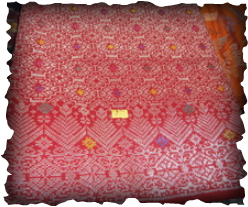

PENGENALAN
 Songket ialah sejenis tenunan yang yang berasal daripada Indonesia dan malaysia. Songket biasanya ditenun dengan tangan menggunakan benang emas dan perak.Pada umumnya ia digunakan pada acara- acara rasmi iseperti perkahwinan, dalam upacara adat istiadat. Ditenun pada mesin tenun bingkai Melayu melalui proses cantuman benang. Songket harus melalui banyak peringkat sebelumimenjadi sehelai kain dan hingga sekarang masih ramai yang menenun songket menggunakan kaedah tradisional.
Kain songket merupakan tenunan yang dihasilkan daripada jalinan benang longsin (yang menunggu) dengan benang pakan (yang mendatang). Proses pada asasnya mudah, ini dapat menghasilkan ciptaan seni tampak yang indah dan menjadi kebanggaan bangsa. Pusat tenunan di Semenanjung bermula di Terengganu. Pada masa ini Terengganu dan Kelantan adalah pusat pengeluaran kain tenunan.
Nama “kain songket” berasal daripada teknik membuat songket, iaitu menyongket atau menyolek bunga (emas) pada tenunan sutera. Pada amnya songket terbahagi kepada dua jenis, iaitu tekat tiga dan tekat lima. Nama tekat itu berkaitan dengan penggunaan bilangan lembaran benang sutera dan jarak antara lembaran benang emas yang disongket. Tekat tiga lebih sukar dan rumit daripada tekat lima dan hasilnya lebih halus. Penggunaan benang emas yang dikembar dua yang dilakukan dengan selembar benang sutera akan menghasilkan tenunan yang lebih bermutu dari segi teknik dan kesan. Reka bentuk kain songket mengandungi badan, kepala, pucuk rebung, atau bunga lawi ayam (dalam bentuk pucuk rebung), diapit di antara kepala dan tepi kain.
Kain songket merupakan tenunan yang dihasilkan daripada jalinan benang longsin (yang menunggu) dengan benang pakan (yang mendatang). Proses pada asasnya mudah, ini dapat menghasilkan ciptaan seni tampak yang indah dan menjadi kebanggaan bangsa. Pusat tenunan di Semenanjung bermula di Terengganu. Pada masa ini Terengganu dan Kelantan adalah pusat pengeluaran kain tenunan.
Nama “kain songket” berasal daripada teknik membuat songket, iaitu menyongket atau menyolek bunga (emas) pada tenunan sutera. Pada amnya songket terbahagi kepada dua jenis, iaitu tekat tiga dan tekat lima. Nama tekat itu berkaitan dengan penggunaan bilangan lembaran benang sutera dan jarak antara lembaran benang emas yang disongket. Tekat tiga lebih sukar dan rumit daripada tekat lima dan hasilnya lebih halus. Penggunaan benang emas yang dikembar dua yang dilakukan dengan selembar benang sutera akan menghasilkan tenunan yang lebih bermutu dari segi teknik dan kesan. Reka bentuk kain songket mengandungi badan, kepala, pucuk rebung, atau bunga lawi ayam (dalam bentuk pucuk rebung), diapit di antara kepala dan tepi kain.